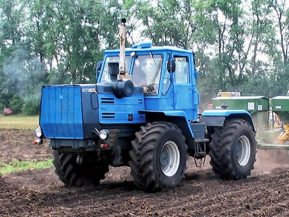

ХТЗ-150К-09-25

ХТЗ-150К-09-25 – це сучасна модифікація легендарного колісного трактора з шарнірно-зчленованою рамою, що належить до 3-го тягового класу. Завдяки схемі «ламана рама» та великим колесам однакового розміру, трактор поєднує високу тягову здатність із відмінною маневреністю, що дозволяє ефективно використовувати його на полях великої та середньої площі.
Основною відмінністю версії є суттєва модернізація комфорту та надійності: трактор отримав нову двомісну кабіну з центральним розташуванням крісла оператора, що забезпечує круговий огляд. Коробка передач дозволяє перемикати швидкості всередині діапазонів без розриву потоку потужності, що критично важливо при роботі з важкими плугами та дисковими боронами. Посилена задня навіска та надійна гідросистема роблять цей трактор універсальним інструментом як для важкого обробітку ґрунту, так і для швидкісного транспортування причепів вагою до 20 тонн.
| Параметр | Значення |
|---|---|
| Клас тяги | 3.0 |
| Тип ходової частини | колісний |
| Колісна формула | 4х4 (повний привід) |
| Тип рами | шарнірно-зчленована |
| Основне призначення | сільськогосподарські роботи: оранка, дискування, суцільна культивація, посів, транспортні роботи |
| Параметр | Значення |
|---|---|
| Модель | ЯМЗ-236Д-3 (Автодизель) |
| Тип двигуна | чотиритактний дизель без турбонаддуву |
| Спосіб охолодження | рідинне |
| Розташування циліндрів | V-подібне (6 циліндрів) |
| Діаметр циліндра/хід поршня | 130 мм / 140 мм |
| Робочий об’єм | 11,15 л |
| Номінальна потужність | 128,7 кВт (175 к.с.) |
| Номінальні оберти | 2100 об/хв |
| Система пуску | електростартер |
| Питома витрата палива | 220 г/кВт.год |
| Параметр | Значення |
|---|---|
| Муфта зчеплення | суха дводискова |
| Тип КПП | механічна, з гідроперемиканням без розриву потоку потужності |
| Кількість передач | 12 вперед / 4 назад |
| Кількість діапазонів | 3 вперед / 1 назад |
| Діапазон швидкостей (вперед) | 3,36 – 30,08 км/год |
| Діапазон швидкостей (назад) | 5,1 – 9,14 км/год |
| Вал відбору потужності | задній незалежний двошвидкісний, 540 і 1000 об/хв |
| Номер діапазону | Номер передачі | Теоретична швидкість, км/год | Передаточне число трансмісії | Тягове зусилля, кН |
|---|---|---|---|---|
| І | 1 | 3,36 | 164,9 | 60,00 |
| І | 2 | 3,85 | 143,9 | 60,00 |
| І | 3 | 4,36 | 127,1 | 60,00 |
| І | 4 | 6,03 | 91,9 | 56,95 |
| ІІ | 1 | 7,08 | 78,3 | 49,93 |
| ІІ | 2 | 8,09 | 68,5 | 42,81 |
| ІІ | 3 | 9,56 | 58,0 | 35,23 |
| ІІ | 4 | 12,57 | 44,1 | 25,01 |
| ІІІ | 1 | 16,27 | 34,1 | 22,06 |
| ІІІ | 2 | 18,62 | 29,8 | 18,97 |
| ІІІ | 3 | 22,01 | 25,2 | 15,70 |
| ІІІ | 4 | 30,08 | 18,4 | 10,86 |
| Параметр | Значення |
|---|---|
| Тип коліс | пневматичні шини низького тиску |
| Марка шин | 21,3R24 |
| Радіус ведучого колеса | 0,7 м |
| Кількість коліс | 4 |
| Ведучі мости | обидва |
| Режим роботи | Витрата, л/год |
|---|---|
| Під час роботи з навантаженням | 18,5 – 24,0 кг/год |
| Під час холостих переїздів | 5,5 – 7,5 кг/год |
| Під час зупинок (холостий хід) | 2,1 – 3,0 кг/год |
| Параметр | Значення |
|---|---|
| Маса експлуатаційна | 8410 кг |
| Довжина / Ширина / Висота | 6130 мм / 2460 мм / 3175 мм |
| Колія / База | 1680 мм / 2860 мм |
| Дорожній просвіт | 400 мм |
| Тип навісного пристрою | задній гідравлічний, триточковий |
| Об’єм паливного баку | 315 л |
| Параметр | Значення |
|---|---|
| Особливості кабіни | двомісна, герметизована, з шумоізоляцією |
| Гальма | колодкові з пневмоприводом |
| Електрообладнання | напруга — 12/24 В |
| Начіпний пристрій | вантажопідйомність — 3000 кгс |